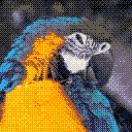

Retro-dither

Maakt van de laag retro-pixelart: elk pixelblok krijgt een kleur uit een palet, zoals dat van een oude console of computer of een palet dat je importeert, en een ditherpatroon mengt paletkleuren om meer tinten na te bootsen.
Instellingen
| Instelling | Type | Bereik | Standaard |
|---|---|---|---|
| Palet | Palet | – | 16 kleuren |
| Dithering | Keuze | Geen, Ruis, Dambord, Bayer 2x2, Bayer 3x3, Bayer 4x4, Bayer 8x8, Clusterpunt 4x4, Clusterpunt 8x8, Horizontale lijnen, Verticale lijnen, Diagonale lijnen, Floyd-Steinberg, False Floyd-Steinberg, Sierra Lite, Fan, Shiau-Fan, Jarvis-Judice-Ninke, Stucki, Burkes, Sierra, Two-Row Sierra, Atkinson | Bayer 4x4 |
| Sterkte | Getal | 0% tot 200% | 100% |
| Pixelgrootte | Getal | 1 tot 64 | 2 |
| Mix | Getal | 0% tot 100% | 100% |